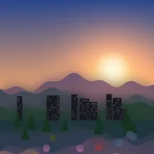

Brilho quente

Desfoca a camada e mantém em cada cor o mais escuro entre o desfoque e a imagem, de modo que as sombras se espalham suavemente pelas partes claras. Máscara limita o efeito a um retângulo, uma elipse ou um polígono.
Configurações
| Configuração | Tipo | Intervalo | Padrão |
|---|---|---|---|
| Nível | Número | 1 a 100 | 50 |
| Máscara | Opção | Nenhum, Retângulo, Elipse, Polígono | Nenhum |
| Posição da máscara | Ponto (X, Y) | -1 a 2 | 0.5, 0.5 |
| Largura da máscara | Número | 0% a 200% | 50% |
| Altura da máscara | Número | 0% a 200% | 50% |
| Lados | Número | 3 a 12 | 6 |
| Suavidade | Número | 0% a 100% | 10% |